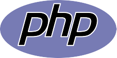

SEACAT
Proyecto Final INSPT
&
Colegio Pío IX
Sistema Escolar
de
Administración de Calificaciones
y
Acompañamiento Tutorial

Primer Paso
Proyecto Informático
Sistema Integral:
- Procesos administrativos
- Procesos académicos
- Procesos económicos
Ingresos 2015
Proceso importante, pero no vital para el funcionamiento normal de la escuela.
¿Por qué con
Software Libre?
- Tuve la libertad de elegir.
- Estoy convencido de que el software libre ES MEJOR.
- Sin costos de licenciamiento.
- Software Libre & Educación.
Lenguaje



- Interpretado
- Multiplataforma
- Fácil aprendizaje
- Multiparadigma
Base de Datos


- 100% Software Libre
- Modelo Objeto-Relacional
- Muy Robusta
- Grandes Proyectos
Framework

- RAD
- Fácil aprendizaje
- 100% MVC
- API CRUD
- DAL
- IDE Web integrado
Control de Versiones


- Fácil
- Rápido y versátil
- Apliamente usado en la comunidad OpenSource

Repositorio en Google Code:
https://code.google.com/p/seacat/
Licencia:

Gracias
Leandro E. Colombo Viña
URL Presentación:
www.bitson.com.ar/flisol/seacat